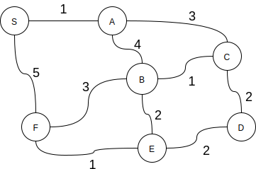

Exercises B¶
Note
You must complete these exercises by Wednesday of W13.
Exercise 6.2.2 (Dijkstra revisited)¶
We are interested in the implementation of the Dijkstra algorithm p655.
What is the time complexity of this algorithm.
Rewrite this algorithm using only auxiliary collections from java.util. So we have to get rid of IndexMinPQ and replace this structure by something else from java.util.
Exercise 6.2.3 (string of fairy lights)¶
The INGI department has acquired a very nice string of fairy lights for Christmas to decorate the Réaumur building. It has the structure of a graph with a lamp on each node. When the tinsel is turned on, a lamp is randomly turned on and then every second, all the lamps directly connected (on adjacent nodes) are turned on in turn. Implement the « minTime » method answering the following question: At the end of how many seconds at the very least could our garland be completely lit?
Voici la signature de la méthode:
public int minTime(Graph G);
You can assume that you have the Graph structure API as described in the book. We assume that the graph G is connected.
What is the time complexity of your algorithm?
Exercise 6.2.4 (Maximization of minimum weight)¶
Let G be a undirected and positively weighted graph. Given an origin S, we want to find a path to each node that maximizes the minimum edge weight on this path.
For example, in this graph, S-F-B-A-C-D is such a path with 2 as the minimum edge point.
Can you adapt an algorithm seen in class to find such paths to each node?
Hint: look at the properties of the weights. Is it comparable to shortest paths?
Exercise 6.2.5 (Inginious)¶
A programming exercise on shortest path with implicit graphs (exam 2018) MineClimbing
Exercise 6.2.6 (Inginious)¶
A challenging path problem in a public transport network (exam 2019) Trains
Exercise 6.2.7 (Inginious)¶
A string transformation problem viewed as path problem on a graph: Words
Exercise 6.2.8 (Inginious)¶
Help the humanity to discover a new habitable galaxy by solving a hyperspace shortest (exam 2021) space: GalaxyPath
Exercise 6.2.9 (Inginious)¶
A topological sort problem to help you verify if your course programme complies with univeristy pre-requisite constraints (exam 2022) TaskScheduler
Exercise 6.2.10 (Inginious)¶
Help Olympic organizers plan efficient evacuation routes Evacuation

{kind=link}